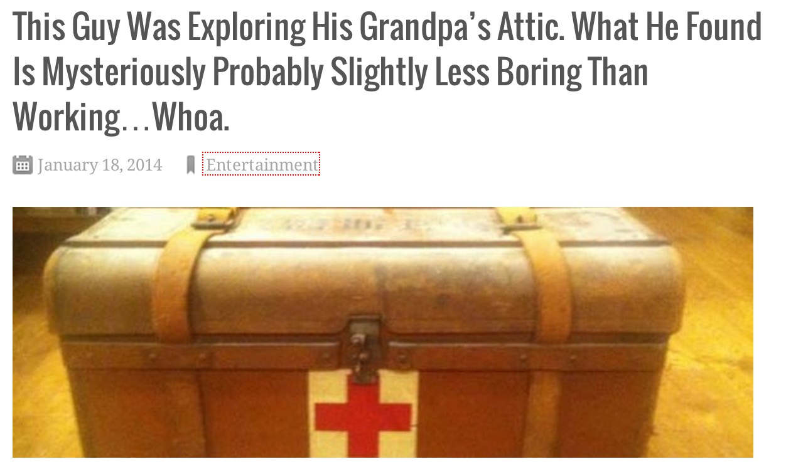
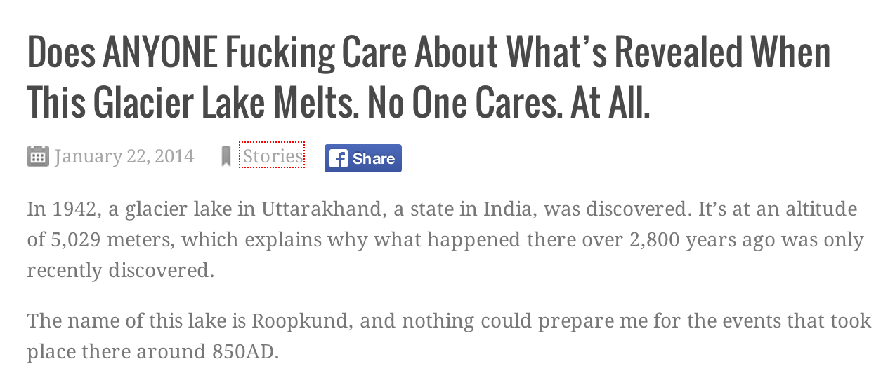
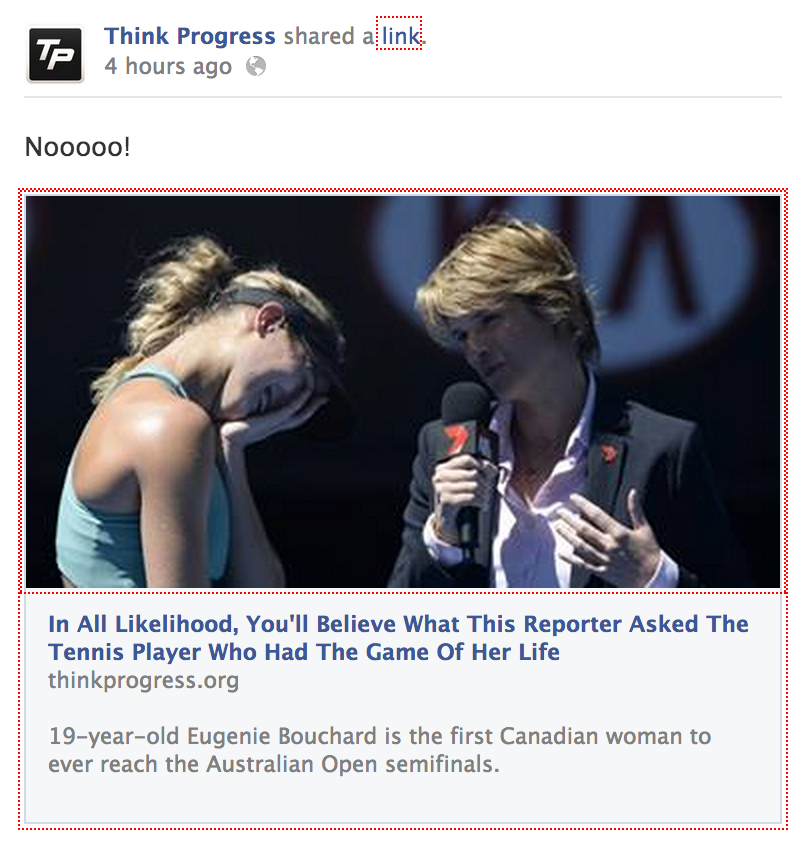
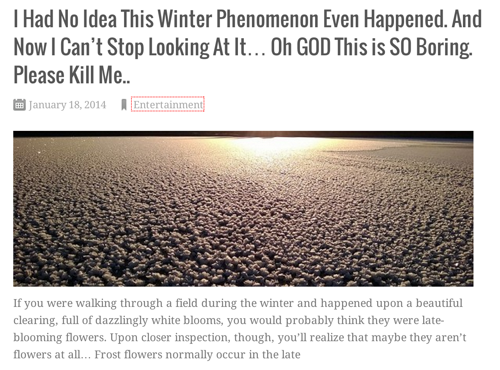

Downworthy
A browser plugin to turn hyperbolic viral headlines into what they really mean
Project maintained by snipe at snipe.net

Because Enough is Enough Already.
We've all seen them - the clickbait headlines that websites like Buzzfeed, ViralNova and UpWorthy use to drive traffic, especially through social networks. Even Huffington Post has jumped on the bandwagon of endless recycled listicles and bombastic titles.
Downworthy replaces hyperbolic headlines from bombastic viral websites with a slightly more realistic version. For example:
- "Literally" becomes "Figuratively"
- "Will Blow Your Mind" becomes "Might Perhaps Mildly Entertain You For a Moment"
- "One Weird Trick" becomes "One Piece of Completely Anecdotal Horseshit"
- "Go Viral" becomes "Be Overused So Much That You'll Silently Pray for the Sweet Release of Death to Make it Stop"
- "Can't Even Handle" becomes "Can Totally Handle Without Any Significant Issue"
- "Incredible" becomes "Painfully Ordinary"
- "You Won't Believe" becomes "In All Likelihood, You'll Believe"
- ... and so on. (see the spoilers list below)
These articles are, in general, not nearly as bad as their titles - but the titles have become SO overblown, they're meaningless and annoying. But people still click, so the trend continues. Consider this me doing my part to stop the insanity.
Examples
These are real screenshots taken during testing.
Original link: This Guy Was Exploring His Grandpa’s Attic. What He Found Is Mysteriously Awesome…Whoa.
Original link: Nothing Could Prepare Me For What’s Revealed When This Glacier Lake Melts. OMG.
Original link: You Won't Believe What This Reporter Asked The Tennis Player Who Had The Game Of Her Life
Original link: I Had No Idea This Winter Phenomenon Even Happened. And Now I Can’t Stop Looking At It... Wow.
What's Next
- Firefox and Safari version
- More phrases, of course
- Multiple modes: "cynical millennial", and "OMFGHOLYSH*T!!" (which will take the hyperbole even further into the realm of the absurd)
Ability to toggle the view off and on, so when you actually do need to read something as it really appears, you can do so easily- done as of v.0.0.5
Current List (Spoilers)
I'm adding more every day, as I come across more headlines that need to be "fixed", but here's the current list. (If you prefer to be surprised, skip this part.)
"$1 Things" => "Inane Listicle of $1 Things You've Already Seen Somewhere Else"
"Restored My Faith In Humanity" => "Affected Me In No Meaningful Way Whatsoever"
"Restored Our Faith In Humanity" => "Affected Us In No Meaningful Way Whatsoever"
"$1 Weird" => "$1 Boring"
"Is|Can|Do|Will)? => "$1 $2? Maybe, but Most Likely Not".
"Absolutely" => "Moderately"
"Amazing" => "Barely Noticeable"
"amazing" => "pretty commonplace"
"Awesome" => "Probably Slightly Less Boring Than Working"
"Breathtaking" => "Fleetingly Inspirational"
"But what happened next" => "And as you expect it"
"can change your life" => "Will Not Change Your Life in ANY Meaningful Way"
"Can't Even Handle" => "Can Totally Handle Without Any Significant Issue"
"Cannot Even Handle" => "Can Probably Totally Handle"
"Doesn't want you to see" => "Doesn't Really Care If You See"
"Epic" => "Mundane"
"Go Viral" => "Be Overused So Much That You'll Silently Pray for the Sweet Release of Death to Make it Stop"
"greatest" => "average"
"Greatest" => "Average"
"Incredible" => "Painfully Ordinary"
"Infuriate" => "Mildly Annoy"
"literally" => "figuratively"
"Literally" => "Figuratively"
"Mind Blowing" => "Mind-Numbingly Ordinary"
"Mind-Blowing" => "Painfully Ordinary"
"Nothing Could Prepare Me For" => "Does ANYONE Fucking Care About"
"Of All Time" => "For Now"
"OMG" => "No One Cares. At All"
"One Weird Trick" => "One Piece of Completely Anecdotal Horseshit"
"one weird trick" => "one piece of nonsensical folklore bullshit"
"priceless" => "painfully ordinary"
"Priceless" => "Painfully Ordinary"
"Right Now" => "Eventually"
"Scientific Reasons" => "Vaguely Science-y Reasons"
"Shocked" => "Vaguely Surprised"
"Shocking" => "Barely Noticeable"
"Simple Lessons" => "Inane Pieces of Bullshit Advice"
"Stop What You’re Doing" => "Bookmark Now and Later Completely Forget About"
"TERRIFYING" => "MODERATELY UNCOMFORTABLE"
"Terrifying" => "Thoroughly Banal"
"That Will Make You Rethink" => "That You May Find Vaguely Interesting But Won't Change Your Life in Any Way"
"This Is What Happens" => "This Is Our Bullshit Clickbait Version Of What Happens"
"totally blew my mind" => "bored me to tears"
"Unbelievable" => "Painfully Ordinary"
"Unimaginable" => "Actually Kind of Droll"
"WHAT?" => "Some Other Crap"
"Whoa" => "*yawn*"
"WHOA" => "Zzzzzzzzzzz"
"Whoah" => "*yawn*"
"Will Blow Your Mind" => "Might Perhaps Mildly Entertain You For a Moment"
"Will Change Your Life Forever" => "Will Not Change Your Life in ANY Meaningful or Lasting Way"
"won the internet" => "seems alright"
"Won the Internet" => "Seemed Pretty Cool"
"Worst" => "Vaguely Unpleasant"
"Wow" => "Oh GOD This is SO Boring. Please Kill Me"
"WOW" => "Zzzzzzzzzzz"
"You Didn't Know Exist" => "No One Gives a Shit About"
"You Didn’t Know Existed" => "No One Gives a Shit About"
"You Wont Believe" => "In All Likelihood, You'll Believe"
Open Source FTW
This plugin is open source. This means that if you like it and want to help, you can! It also means that you'll always be able to see the source code of the plugin, so you can be sure we won't do anything awful like stuffing it full of malware or ads like these asshats.
History
Downworthy was created on January 21, 2014, sparked by a funny exchange on Twitter a few weeks prior where I suggested writing a plugin to take the hyperbolic headlines on viral websites to their next logical conclusion.
It will replace phrase like "will blow your mind" with things like "will actually cause your instant death from explosive diarrhea"
— snipe ツ (@snipeyhead) January 1, 2014Show Your Love
If you use and enjoy this plugin, consider leaving a good review for it in the Chrome store, saying hello on Twitter, or buying me a cup of coffee. If you're a dev interested in helping out, feel free to fork the source code at GitHub. I try to review all pull requests within 24 hours.
Special Thanks
There have been similar plugins that came before this one that served as sources of inspiration in both execution and code, and they're worth checking out if you haven't already, most notably the hilarious Cloud-to-Butt plugin by @panicsteve and the amazing Jailbreak the Patriarchy plugin by @DanielleSucher. And of course, thanks for this snazzy theme, hosted on Github Pages and designed by mattgraham.
Support or Contact
Having trouble with the plugin or just want to say hi? Follow me on Twitter, open a GitHub issue for the project, or drop me an email snipe@snipe.net.
About Me
I'm the CTO of a creative agency called noise. We make cool stuff for awesome clients. You should consider working for us.
If you liked this project, you might enjoy another snarky site of mine, socialmediadouchebag.net.
Press
- Ad Age - Jan 24, 2014
- The Independent - Jan 24, 2014
- The Atlantic - Jan 24, 2014
- BoingBoing - Jan 24, 2014
- Washington Post - Jan 24, 2014
- Uproxx Gamma Squad - Jan 24, 2014
- Animal - Jan 24, 2014
- Daily Caller - Jan 24, 2014
- Geekosystem - Jan 24, 2014
- The Daily Dot - Jan 24, 2014
- Bullett - Jan 24, 2014
- K94.5 - Jan 24, 2014
- Jezebel - Jan 25, 2014
- Lifehacker AU - Jan 25, 2014
- The Verge - Jan 26, 2014
- Complex - Jan 26, 2014
- American Public Media’s Morning Marketplace Report - Jan 27, 2014
- The Dish by Andrew Sullivan - Jan 27, 2014
- FastCompany Co.Create - Jan 27, 2014
- Anil Dash - Jan 27, 2014
- PSFK - Jan 27, 2014
- Memeburn - Jan 27, 2014
- Computerra.Ru (Russian) - Jan 27, 2014
- TicBeat (Spanish) - Jan 27, 2014
- Inc.Com - Jan 27, 2014
- Firstpost - Jan 27, 2014
- Pocket-Lint - Jan 27, 2014
- Keep Marketing Fun - Jan 29, 2014
- Haaretz (Hebrew) - Jan 29, 2014